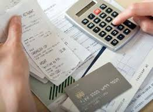

Все о личных финансах. Машина

Все об автомобиляхПрежде всего нужно отметить, что поправки в Закон «О защите прав потребителя» уже вступили в силу. Так что покупатель имеет право обменять технически сложный товар в течение 15 дней при обнаружении любых недостатков.
Почему эта тема не включена в любой другой раздел? Потому что, на мой взгляд, автомобиль – самый дорогой из всех технически сложных товаров, которые мы покупаем.
Прежде вернуть технически сложный товар (далее – просто автомобиль, так как именно о них мы тут и говорим) представляло большую сложность: недостаток должны были признать существенным, срок обмена не указывался, и вернуть автомобиль в салон без обращения в суд было практически невозможно.
Теперь есть четкие правила: в течение 10 дней можно вернуть деньги, а в срок до 1 месяца – заменить бракованный товар на качественный.
Покупатель вправе также требовать замены или возврата полной суммы в случае нарушения срока гарантийного ремонта (более 45 дней) или в случае, если в течение года товар находится в гарантийном ремонте в общей сложности более 30 дней.
Сейчас покупатель при заключении договора может лично присутствовать при проведении экспертизы товара и требовать исправить недостаток за минимальный срок, даже невзирая на то, что на складе нет необходимых деталей (это уже проблема продавца).
Если продавец не согласен с причиной возникновения дефекта, он за свой счет может провести экспертизу и обратиться в суд.
Какую машину купитьНа отечественном рынке представлено более 2000 моделей машин: это российские автомобили и иномарки; подержанные и новые; предлагаемые автосалонами и сомнительными дилерами. Такой огромный выбор может привести в замешательство кого угодно.
Вот основные вопросы, которые должен задать себе потенциальный покупатель автомашины:
• для каких целей нужен автомобиль;
• какую сумму планируется потратить на приобретение (включая страховку);
• какие модели предлагаются в выбранном ценовом сегменте;
• будет ли автомобиль покупаться в кредит или за наличный расчет;
• нужен новый автомобиль или подержанный;
• где покупать машину (в салоне, на авторынке и т. п.);
• где будет осуществляться техобслуживание и хранение автомобиля после покупки.
Только четко ответив себе на все эти вопросы, можно выбрать машину, которая будет оптимально подходить именно вам. Теперь обо всех этих пунктах подробно.
Класс автомобиля
Для ежедневных поездок на работу и домой оптимальным вариантом является седан. Класс автомобиля – от среднего до представительского – зависит от требований к уровню комфорта.
Семейными автомобилями традиционно считаются машины в кузове универсал и минивен, хотя в последнее время в эту нишу стараются «втиснуть» и небольшие городские внедорожники. Главное, чтобы он был вместительным и подходил для путешествий всей семьей.
Для поездок за город, где дороги не очень хорошие, рекомендуется брать настоящие джипы. Не «паркетники».
Кроме того, на этом же этапе стоит решить еще несколько принципиальных «автовопросов», от которых напрямую зависит стоимость машины.
Какой выбрать двигатель:объем, мощность, расход и вид топлива. Так, для маленьких автомобилей достаточно будет и 100 лошадиных сил, для седанов – 150. Можно, конечно, купить седан и на 300 «лошадей»… Дополнительная мощность влияет не только на максимальную скорость, но и на динамику разгона. Правда, важна динамика скорее лихачам: можно рвать с места на светофоре плюс больше уверенности при обгоне.
С другой стороны, не зря говорят: кто знает жизнь, тот не спешит.
Но надо помнить, что с увеличением мощности машины увеличивается и расход топлива. Золотую середину каждый должен определить для себя сам: после покупки машины заправка – самая большая статья расходов. Одновременно стоит задуматься над тем, каким топливомвы планируете заправлять автомобиль: будет ли это бензин, и какой, или это будет дизель, а может быть, газ или становящийся все более популярным гибридный двигатель. Например, приблизительно подсчитать, сколько уйдет на бензин или дизельное топливо при равных мощностях двигателей, совсем несложно, но важно. Стоит учесть, что дизельные двигатели не только экономичны, но и долговечны. А вот зимой они могут доставить немало проблем: часто бывает, что их довольно сложно завести. Еще одна неприятность – более высокий уровень шума в работе по сравнению с бензиновыми двигателями. С другой стороны, дизельное топливо дешевле бензина премиум-сегмента.
Какая у автомобля будет коробка передач:автоматическая или механическая? Машина с АКПП – скорее городская. Ею легче управлять: отсутствует педаль сцепления; легче трогаться с места; проще передвигаться по загруженному транспортом городу. Минусы: автомобиль с АКПП дороже на 1,5–2 тысячи долларов, у него б ольший расход топлива по сравнению с механической коробкой; ремонт автоматов очень дорог, но при правильной эксплуатации автоматы достаточно долговечны.
Механическая (или ручная) коробка менее удобна, особенно для начинающего водителя, хотя уже стала классикой. Она дает более чуткое управление мощностью, чем автомат.
По типу привода машины сегодня делятся на три класса: классика (задний), передний и полноприводная. Самый дорогой вариант, естественно, полноприводной.
На вкус и цветтоварища нет, но с точки зрения безопасности лучше приобретать машину желтого, красного или белого цвета. Такие авто хорошо заметны на дороге в темное время суток и, по статистике, реже попадают в аварии. Оптимальный вариант – светло-коричневые оттенки: они не так популярны, но, поскольку редко встречаются, их и угоняют реже.
Способы купли-продажи автомобилейПередача транспортного средства от одного лица другому может осуществляться любым не запрещенным законом способом: через продажу, дарение, мену, лизинг, завещание, безвозмездное пользование и т. д.
Договор купли-продажи
Это вполне надежный, с юридической точки зрения, способ купли-продажи транспортных средств. Автомобиль является объектом движимого имущества, и никакой государственной регистрации прав на него не требуется. Постановка машины на учет в ГИБДД не означает регистрации права собственности, а представляет собой допуск транспортного средства к эксплуатации по дорогам общего пользования. Так, купив автомобиль, на нем можно ездить, например, по своему дачному участку без регистрации его в ГИБДД. Поэтому продавец и покупатель вправе самостоятельно заключить договор купли-продажи, не прибегая к помощи посредников, комиссионных магазинов, нотариусов.
Справка-счет
Формально процесс выглядит так: продавец заключает с комиссионным магазином договор комиссии, а покупатель – договор купли-продажи. На практике продавец снимает машину с учета и вместе с покупателем оформляет в магазине на машину справку-счет, транзитные номера, а в ПТС вписывается новый собственник. С данного момента право собственности переходит от продавца к покупателю со всеми вытекающими последствиями – обязанностями платить налоги, нести ответственность за причинение вреда и т. д.
Доверенность
Это самый распространенный в настоящее время способ «купли-продажи» автомобиля: подкупает его простота. Не снимая машины с учета, ее владелец, предъявив нотариусу свой паспорт, документы на автомобиль и паспорт «покупателя», оформляет на него генеральную доверенность на право пользования автомобилем. Однако при этом право собственности на автомобиль к новому владельцу не переходит, так как по доверенности предоставляются только определенные полномочия на представительство перед третьими лицами.
Именно поэтому, строго говоря, ни продать, ни купить автомобиль по доверенности невозможно. Собственником останется тот, на чье имя зарегистрирована машина.
Право собственности предполагает и определенные обязанности: собственник продолжает нести ответственность за причинение вреда, например, при ДТП как владелец источника повышенной опасности. Иными словами, если «покупатель» в кого-нибудь врежется, то суд может обязать собственника автомобиля возместить ущерб пострадавшему. А в случае, когда обладатель доверенности не уплатит предусмотренные налоги, налоговая инспекция может предъявить штрафные санкции именно владельцу.
Новая отечественная машина или подержанная иномарка?Если сумма на покупку авто не превышает 10 тысяч долларов даже с кредитом, то возможны два варианта: купить новый отечественныйавтомобиль или 3-5-летний иностранный(обычно корейского или чешского производства).
Если вы предполагаете впоследствии перепродать автомобиль, то имейте в виду, что через 2–3 года иномарка потеряет около 20–30 % стоимости. Впрочем, как и любая новая иномарка. Отечественная же машина теряет в цене с невероятной скоростью, даже если она все это время простояла в гараже. В России спидометрам и сервисным книжкам уже давно никто не верит.
В этом ценовом сегменте главный критерий выбора – практичность и приспособленность к российским условиям. На опции внимание обращать смысла нет никакого, как собственно нет и самих опций.
Отечественные автомобили по-прежнему отстают по качеству сборки, дизайну и интерьеру даже от китайских. В ближайшее время все это должно, конечно, измениться. Тем не менее это новая машина, и скорее всего какое-то время она не будет доставлять своему владельцу особых хлопот.
Иномарка, конечно, будет выглядеть да и ездить лучше новой «россиянки», но довольно скоро начнет настойчиво требовать ремонта. Детали у официального дилера стоят довольно дорого.
Тут каждый решает сам, но получается, что иномарка новее конструктивно, удобнее, комфортнее и безопаснее. Отечественное авто более приспособлено к российским условиям и требует менее дорогого, но частого ремонта.
Авто в кредитНаверное, разумнее все-таки немного затянуть ремень и купить новую иномарку, не самую дешевую и в кредит. Помимо классических автокредитовна рынке появились даже экспресс-автокредиты, выдаваемые в день обращения в автосалон. Однако в этом случае процентная ставка будет несколько выше (за удобство надо платить). Сейчас появляются совместные программы дилеров и банков, где автодилер компенсирует своим покупателям часть расходов, связанных с выплатой процентов по кредиту. Не хотят оставаться в стороне и сами автопроизводители, активно открывая собственные кредитные организации и проводя все сделки только через них. В скором времени они могут потеснить обычные банки.
Главное – не наделать в азарте ошибок и неподъемных долгов. Прежде всего обращайте внимание на реальные переплаты по кредиту, а не только на процентную ставку. Сразу в салоне или в банке посчитайте, сколько в итоге вы заплатите за автомобиль. Очень часто заемщик в последний момент, когда машина уже фактически на руках, узнает, что все его выплаты в конечном итоге составят две цены автомобиля. Это при том, что банк или автосалон заявляли «нулевую» процентную ставку. Надо понимать, что никто не собирается вам просто так давать в долг 10–20 тысяч долларов, да еще на 3–4 года.
Самый простой способ – это попросить менеджера, который вас консультирует по кредиту, сделать подробную распечатку: сколько стоит авто, какие комиссии, ежемесячные платежи, какие в итоге окажутся переплаты. А потом еще раз все пересчитать самому.
Поскольку цена кредита зависит также от первоначального взноса, не постесняйтесь попросить того же менеджера просчитать несколько вариантов – с разным первоначальным взносом. Вполне возможно, что выгоднее будет заплатить сразу больше денег и взять меньший кредит под значительно меньший процент.
Кроме того, специалисты советуют обратить внимание на то, как будет погашаться кредит, если, например, человек потерял работу и не может больше платить. Специалисты говорят о двух путях решения подобной проблемы: пойти в банк и объяснить ситуацию (большинство банков пойдут навстречу и дадут отсрочку, пока кредитор не найдет работу). Второй вариант, если вы в таком течении событий не уверены, – продать автомобиль. В этом случае часть денег идет на погашение кредита, а остальное – несчастному заемщику. Если, конечно, что-то останется.
Обязательно читайте дополнения к договору, напечатанные мелким шрифтом. Там может содержаться очень важная информация о дополнительных условиях предоставления кредита.
Кроме того, существует такой кредитный продукт, как Trade-In.В этом случае в качестве первого взноса можно использовать свой старый автомобиль. Оценку автомобиля проводят сами дилеры. Цена на машину с пробегом зависит от ее технического состояния, но в среднем она на 10 % ниже рыночной. Правда, если подержанная машина, что называется, как новенькая, то за нее могут дать и максимальную рыночную цену.
Покупка автомобиля по взаимозачету имеет немало плюсов. Например, это экономия времени, поскольку оформлением документов по реализации подержанного автомобиля занимается магазин. Кроме того, определенные гарантии безопасности, поскольку машина продается в салоне, а не на рынке.
По данным ассоциации «Российские автомобильные дилеры», сегодня по схеме взаимозачета у нас продается уже каждая пятая новая иномарка. А в перспективе, как и на Западе, таким образом будет реализовываться каждая вторая машина.
Можно ли снизить выплаты по кредиту?
Ежемесячный платеж по автокредиту можно снизить на треть. Но для этого уже при покупке машины нужно договориться с автосалоном о ее последующей продаже. Это так называемая система Бай Бэк.Ее автосалоны стали предлагать россиянам совсем недавно. Схема такова: покупатель выплачивает по кредиту не полную стоимость машины, а всего 65–70 %. А через 3 года, когда срок кредита истечет, может либо доплатить остальные деньги и оставить машину себе, либо продать ее автосалону и получить компенсацию. С одной стороны, это гарантия того, что машина точно будет выкуплена, с другой – на разницу между остаточной стоимостью и суммой в 35 % можно, например, сделать первый взнос за следующий новый автомобиль.
Автодилеры считают, что такая схема выгодна тем, кто любит часто менять машины: можно все время ездить на новом автомобиле, покупая его за полцены. Выигрывают и те, кто хочет купить престижную дорогую машину, но не имеет достаточно средств.
Если покупатель решит вернуть машину после 3 лет эксплуатации, оценивать ее будет сам автосалон. И если на рынке за трехлетний автомобиль дадут 60–65 % от первоначальной цены, то автосалон предложит примерно половину.
Маленькие хитрости
При получении кредита придется выполнить некоторые обязательные условия.
Самым главным требованием банка является полное страхование транспортного средства, то есть ОСАГО плюс КАСКО. Тут уж не поспоришь: банк печется о сохранности залога. Некоторые банки в качестве обязательного условия получения кредита ставят еще и страхование жизни заемщика.
Как правило, выбирать страховщика приходится из предлагаемого перечня компаний, прошедших тендер банка. Страхование кредитного автомобиля производится путем заключения трехстороннего соглашения между банком, страхователем и страховой компанией.
Выгодоприобретателем по такому соглашению выступает банк, который определяет порядок направления и использования суммы страхового возмещения при наступлении страхового случая.
Полное страхование – вещь недешевая. Это понимают все. Поэтому в последнее время появилась возможность включать страховую сумму в кредит, а некоторые кредитные программы, появившиеся совсем недавно, позволяют и вовсе обойтись без страховки. Но это пока редкость.
Вообще, как уже было сказано, каждая сторона старается получить выгоду. И автосалон в том числе. Здесь надо быть начеку. Обычно одним из пунктов договора на получение кредита является установка в машине электронной противоугонной системы. Менеджеры по дополнительному оборудованию бодро тычут в этот пункт и тут же предлагают установить сигнализацию долларов этак за семьсот. В противном случае грозят неполучением кредита. Таких ретивых работников быстро отрезвит звонок в банк, который, как правило, вовсе не настаивает на установке противоугонной системы непосредственно в автосалоне. Это вполне можно сделать в другом месте и в несколько раз дешевле.
Бывает, что в автосалоне навязывают платную регистрацию в ГАИ. Напомним, что стоит эта услуга около 300 долларов. Вас убеждают: дескать, пока вы кредит не выплатите, ПТС остается в банке, а без него вы сами на учет машину не поставите. Логически все верно, но юридически такое тянет на нарушение прав и свобод граждан. Это прямой повод пожаловаться в банк или сразу в Общество защиты прав потребителей. Подобные коллизии возникают из-за несовершенства российского законодательства.
В любом случае лучше сначала договориться о кредите с банком, а потом уже идти в автосалон. Тогда навязать вам что бы то ни было будет затруднительно.
Впрочем, есть вполне надежный, простой и набирающий популярность способ обойти и страхование, и «причуды» автосалона – взять кредит на неотложные нужды. Просто берите в банке деньги и тратьте по своему усмотрению. Можно, например, купить машину. Да, процентная ставка в этом кредите несколько выше и может достигать даже 20 %, но при определенных условиях это может оказаться выгоднее.
Виды страхованияПервое, без чего сейчас не обходится ни один автомобиль, – это ОСАГО– обязательное страхование автогражданской ответственности. Страховые случаи – вред здоровью и имуществу третьих лиц. Правила ОСАГО гласят: «Страховым случаем признается причинение в результате дорожно-транспортного происшествия в период действия договора обязательного страхования владельцем транспортного средства вреда жизни, здоровью или имуществу потерпевшего, которое влечет за собой обязанность страховщика произвести страховую выплату». В правилах также перечислен солидный перечень исключений, на который следует обращать внимание.
Размер страховой суммы по ОСАГО утвержден правительством РФ и составляет 400 тысяч рублей. Это максимальная сумма, в пределах которой компания несет ответственность за своего клиента. Однако при этом указанная сумма делится на две части: возмещение вреда, причиненного жизни или здоровью, и возмещение вреда, причиненного имуществу. С 1 июля 2008 года в России вводится Европейский протокол урегулирования убытков. За выплатами по ОСАГО нужно будет обращаться в свою страховую компанию, а не в чужую, как это происходит сегодня. Документ оговаривает, что мелкие дорожно-транспортные происшествия можно урегулировать прямо на месте, без участия сотрудника ГИБДД. Для этого необходимо соблюдение определенных условий: в аварии участвовало не более двух автомобилей; оба застрахованы по ОСАГО; оба водителя не имеют претензий друг к другу, то есть ущерб урегулирован и не превышает 25 тысяч рублей.
ДСАГО– дополнительное страхование гражданской ответственности. Оно покрывает ущерб здоровью и имуществу третьих лиц, превышающий максимальный размер выплат по ОСАГО. Аварии из нескольких машин – не редкость, поэтому без ДСАГО придется покрывать остатки ущерба самостоятельно.
Договор КАСКОотносится к вашей машине. Можно застраховаться от угона и ущерба или же от любой из этих неприятностей. К страховым случаям относятся угон транспортного средства с помощью кражи, грабежа, разбоя, мошенничества и ущерб в результате ДТП, падения предметов, пожара, стихийного бедствия, действий злоумышленников и животных. Страховая сумма КАСКО обычно равна рыночной стоимости автомобиля (по оценке страховщиков). При этом следует выяснить, что не будет включено в страховку. Например, повреждение автомобиля в результате его эксплуатации или неосторожности водителя при пользовании огнем или курении не относится к страховым случаям. Также не удастся добиться компенсации при потере ключей или хищении регистрационных знаков и оборудования, не входящего в заводскую комплектацию.
Есть еще страховка от несчастного случая.Сюда входят ранение, травма, приведшие к ухудшению здоровья пострадавших, потере трудоспособности или смерти. Защитить здоровье можно по двум системам – паушальной и системе мест. При паушальной системе страхуется весь салон, а выплаты производятся путем деления общей страховой суммы на количество пострадавших. При системе мест на определенную сумму страхуется каждое место.
И наконец, «Зеленая карта»:вред здоровью и имуществу третьих лиц за границей (все страны Шенгенского соглашения). В Европе данная страховка является обязательной, поэтому путешественникам на своем автомобиле придется ее приобрести.
Цена вопроса
Тарифы на ОСАГО установлены правительством. Они зависят от типа и мощности транспортного средства, территории его использования, наличия предыдущих выплат, стажа и возраста водителя и срока использования транспортного средства. Поэтому цена полиса везде примерно одинакова.
Стоимость добровольной страховки – вопрос индивидуальный. У каждой страховой компании существуют свои методы определения тарифов. Главный критерий при определении стоимости КАСКО – это стоимость самого автомобиля, ведь она напрямую влияет на размер выплат. Во-вторых, стоимость зависит от возраста автовладельца и его водительского стажа. По логике страховщиков, чем опытнее водитель, тем меньше вероятность наступления страхового случая.
На цене полиса отразится и размер франшизы, то есть суммы, которую вам придется выплачивать самостоятельно, не беспокоя по пустякам страховую компанию.
Определяя страховую сумму, страховщики часто занижают стоимость подержанных автомобилей. Обычно считается, что за первый год машина теряет пятую часть своей стоимости, за второй год – 15 %, а за все последующие – по 10 %. Так что обладателям стареньких авто есть смысл внимательно исследовать и сравнить условия в различных компаниях: они могут сильно отличаться. В основном на КАСКО принимаются иномарки не старше 7–9 лет, отечественные машины – не старше 5–6 лет.
В «Зеленой карте» могут отличаться программы, но тарифы установлены законодательно. Цена полиса страхования от несчастного случая зависит от вида страховки и страховой суммы, которая в свою очередь определяется по согласованию сторон. Дополнительное оборудование компании берутся застраховать только при наличии КАСКО. Цена полиса составит 10–15 % от страховой суммы, которая обусловлена рыночной стоимостью каждого застрахованного элемента.
Как сэкономить на страховке
Сэкономить можно, страхуя машину «оптом», то есть приобретая сразу несколько полисов – ОСАГО, КАСКО, от несчастного случая.
Кроме того, по закону тот, кто ездит на своем автомобиле без аварий, может рассчитывать на скидку при продлении договора страхования. Каждый год безаварийной езды – это скидка 5 % от стоимости страхового полиса. По идее тот, кто проездит без аварий 10 лет, получит возможность платить за страховку лишь половину суммы.
Действующая с лета 2007 года редакция закона позволяет учитывать коэффициент «бонус-малус» при смене автомобиля только тем автовладельцам, у кого в полисе водители прописаны пофамильно. Страхователи, оформлявшие полис без ограничения водителей, надеялись, что правительство и для них сумеет найти в законе возможность получения скидок за безаварийную езду при покупке нового автомобиля. Но увы! В данном случае закон вариантов не оставляет: если полис оформляется без указания водителей, то скидки действуют только до тех пор, пока владелец не сменил автомобиль.
По закону для того, кто за год всего раз стал виновником ДТП, страховой полис дорожает в 1,5 раза. А для того, кто попал в аварию дважды, – в 2,5 раза.
Кстати, в разных странах действует разная система скидок на страхование за безаварийную езду. Так, в Австрии бонусы сохраняются только в случае, если человек купил новую машину не меньше чем через год после продажи старой. А в Германии, чтобы получить скидку на полис в 20 %, нужно проездить без аварий 15 лет.
Получение страховых выплат
По закону ждать компенсацию придется максимум 15 рабочих дней с момента подачи заявления и предоставления всех необходимых документов.
Обратный отсчет запускается после предоставления последней бумаги.
В течение пяти рабочих дней после подачи заявления автомобиль должны подвергнуть экспертизе. В противном случае вы вправе потребовать экспертизу «у себя дома», не предоставляя автомобиль страховщику.
Затяжка времени по вине страховщика влечет дополнительную компенсацию, которую необходимо потребовать вне зависимости от суммы выплат.
Страховая сумма может оказаться значительно ниже ожидаемой и даже выставленной экспертом. В случае, если речь идет о реальном занижении стоимости, а не об ошибке эксперта, можно смело обращаться в суд. Но сначала нужно попытаться решить проблему мирным путем, направив страховщику досудебную претензию.
Если страховая компания вовсе необоснованно отказала в выплате, то здесь необходимо разбираться непосредственно со страховщиком. Алгоритм действий тот же самый: досудебная претензия – исковое заявление в суд. Только прежде необходимо еще раз внимательно изучить правила страхования страховой компании – возможно, ваш «типичный» страховой случай таковым не считается.
Подводные камни
• Страховой брокер не несет ответственности по договору КАСКО. Поэтому при выборе компании лучше позвонить в отдел по работе с клиентами и уточнить всю интересующую вас информацию.
• Договор о КАСКО состоит из полиса и приложений. Обращайте внимание на приложения: там могут содержаться важные условия и дополнения.
• Скрытая франшиза. Ее обычно упоминают маленькими буквами в приложениях к договору. Там, к примеру, может быть прописано, что страховая компания покрывает только два страховых случая в год.
• Нечеткое определение понятий угон, ущерби пожар.Например, если машину поджигают, то это можно назвать не пожаром, а поджогом.
• У брокера должна иметься доверенность на заключение договора, либо под ним должен поставить подпись представитель страховой компании, имеющий на это право.
В противном случае договор со страховой компанией недействителен.
• В договоре может быть указано, что страховщик вправе отказать в выплате при непрохождении техобслуживания в должные сроки.
• Не все стоянки имеют юридический статус охраняемой стоянки.
• В случае угона страховая компания вправе отодвинуть время выплаты на два месяца, организовав собственные поиски автомобиля.
• Страховщики ждут документы 15 рабочих дней. Справку из компетентных органов можно получать и дольше.
• Осуществление ремонтных работ в «своем» автосервисе. При этом качество работ в данном сервисе может быть далеко не лучшим.
• Оплата стоимости запчастей с учетом износа. Этот пункт может значительно удешевить для страховой компании ремонт вашего автомобиля.
• Фиксация стоимости нормочаса, то есть красить бампер могут хоть 2 недели, но заплатить придется лишь за половину нормочаса: именно столько по правилам отводится на покраску этой детали машины в договоре. При подорожании услуг клиенту придется оплачивать разницу из своего кармана.
• В пункте об оплате ремонта можно обнаружить сноску о том, что в него не включается стоимость запчастей либо ремонтных работ.
Неприятности с кредитным автомобилем
При страховании кредитного автомобиля выгодоприобретателем становится банк. Это означает, что, если наступит страховой случай – машину угонят либо вы попадете в аварию, после которой авто не будет подлежать восстановлению, – деньги от страховой компании получите не вы, а банк. За счет страховой выплаты он полностью погасит задолженность. Соответсебе банк из выплаченной страховки только остаток основного долга и проценты за время пользования ссудой; по сути схема аналогична досрочному погашению кредита. Если после погашения задолженности остаются денежные средства, их можно получить со своего счета в банке.
Продажа автомобиляПрежде всего автомобиль надо правильно оценить. Помочь в этом могут, например, автостраховщики. У них есть подробные таблицы с расчетами, сколько новый автомобиль теряет в цене за каждый год своей жизни. Максимально машина дешевеет в первый год – на 15–20 %. Во второй и третий потери составляют по 10 %, а в четвертый и пятый – 5–7 %. Таким образом, при стоимости новой машины 10 тысяч долларов через год она стоит уже 8 тысяч, а через 5 лет – 5–6 тысяч. И это даже в том случае, если все это время машина простояла в гараже. Нужно быть готовым к тому, что покупатель для собственной оценки автомобиля тоже может привлечь эксперта. А от его внимания не ускользнет, если автомобиль перекрашивался или побывал в аварии. Кроме того, он оценит и реальный пробег: соответствует ли он показаниям спидометра (есть косвенные признаки, по которым специалисты могут определить реальный пробег с данными одометра).
Если у машины было больше двух хозяев, она может потерять в цене еще до 5 %. А вот если хозяйкой автомобиля была дама, это может как раз увеличить его стоимость: по статистике, женщины водят машину аккуратнее и бережнее относятся к салону.
Утилизация автомобиляПрежде всего автомобиль следует снять с учета в отделении автоинспекции, чтобы впредь не платить транспортный налог, затем отвезти на свалку или специальный завод по переработке автомобилей. Там машину взвесят, оценят, пустят под пресс и выплатят за нее как за металлолом от 500 до 700 рублей. Однако нередко автовладельцы просто оставляют старые автомобили ржаветь на улицах или во дворах. Наиболее актуальна проблема автолома для крупных городов. Ежегодно только в Москве из эксплуатации выбывают около 100 тысяч автомобилей, но лишь четвертая часть из них идет на переработку. А через несколько лет число старых машин увеличится в несколько раз. Законодатели предлагают решить эту проблему, взяв за основу западный опыт: при покупке новой машины взимать пошлину за то, что когда-то машина будет утилизована.
Сегодня вторичная переработка одного автомобиля стоит от 6 до 10 тысяч рублей. Примерно такую сумму придется доплачивать за машину ее владельцу, если европейские правила будут применены в России.
ЭкостандартыС 2008 года в России действует экологический стандарт Евро-3. Это значит, что ввезти в страну иномарку старше 1999 года будет невозможно. Именно тогда в Европе ввели этот экологический стандарт. Новый стандарт распространяется и на российские заводы. С 1 января 2008 года они также должны выпускать продукцию, сертифицированную по Евро-3. А изменения в производственном процессе ведут к дополнительным издержкам. Два завода уже объявили о росте цен на свои автомобили с начала года: АвтоВАЗ оценивает свои модели в среднем на 2 % дороже, а Ульяновский завод повышает стоимость относительно популярной модели Hunter на 5 тысяч рублей. Действовать Евро-3 в России будет всего два года. В 2010 году предусмотрен переход к Евро-4, который был принят в Евросоюзе в 2005 году. Это сулит нам не только еще одно сокращение старого импорта, но и грозит серьезными трудностями отечественному авто-прому. Нынешний экологический переход все же не требует капитальных изменений в конструкции наших автомашин и в принципе проходит безболезненно для крупных заводов. Но для Евро-4 нужны более серьезные доработки, вплоть до полной смены двигателя.
Прокат автомобиляСегодня практически во всех крупных городах России есть такая услуга – прокат автомобиля. Если ваш автомобиль сломался и стоит в автосервисе, можете обратиться в прокатную компанию. В столице взять автомобиль напрокат на майские праздники можно примерно за 3–6 тысяч рублей. Новый «Мерседес», конечно, за эти деньги не арендуешь, но вполне приличную иномарку эконом-класса, например «Хёндай Акцент», можно. В эту сумму входит все: сам прокат за трое суток плюс страховка на случай аварии или угона автомобиля.
Как правило, по условиям проката автомашина выдается с полным заправленным баком и так же должна возвращаться, но, если не хватает бензина, клиент, как правило, просто немного доплачивает. Кроме того, машина должна быть чистой; производится полный осмотр автомобиля, специально на бланках прокатных листов или договоров аренды фиксируются абсолютно все точечки, вмятинки с тем, чтобы потом клиент был спокоен, что с него лишнего никто не взыщет. И на это надо обратить особое внимание. Ведь перед тем как автомобиль дают в прокат, с клиента берут залог не меньше 10–15 тысяч рублей. Его размер зависит от класса автомобиля: чем он выше, тем больше залог. С клиента, который решил покататься на мерседесе, могут в залог взять и 50, и 70 тысяч рублей. Деньги полностью возвращаются только в том случае, если машину вернули вовремя, в нужное место и при этом после тщательной проверки не обнаружили никаких новых повреждений.
Во многих компаниях существует правило: клиент должен быть не моложе 21 года и со стажем вождения не меньше 12 месяцев. Адреса и телефоны проката нужно искать либо в прессе, либо в Интернете.